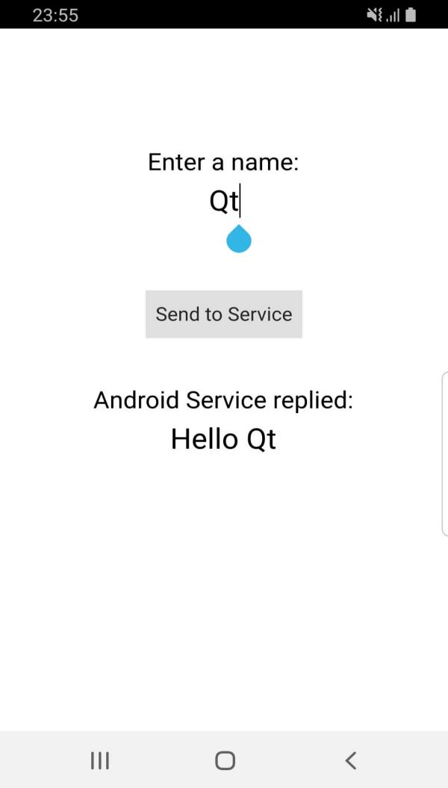

Android Service with QAndroidBinder
Demonstrates how to run an Android service in a separate process, and how to communicate between the service process and the main process using QAndroidBinder.

This example demonstrates how to create and run an Android service in a separate process and using a separate .so lib file, and then exchange data between the two processes using QAndroidBinder.
When clicking the Send to Service button, the name entered in the QML view, Qt, in this case, is sent to the Android service. Then, the service replies back with the message Hello Qt which is printed in the QML view.
Running the Example
To run the example from Qt Creator, open the Welcome mode and select the example from Examples. For more information, visit Building and Running an Example.
Create the Service
To start a service in its own process, extend the QtService class for your service. Extending QtService allows the service to load the necessary Qt libraries used for Qt.
Start by creating the Java service class. The following class extends QtService and acts as your service entry point:
package org.qtproject.example.qtandroidservice;
import android.content.Context;
import android.content.Intent;
import org.qtproject.qt5.android.bindings.QtService;
import android.util.Log;
public class QtAndroidService extends QtService {
private static final String TAG = "QtAndroidService";
@Override
public void onCreate() {
super.onCreate();
Log.i(TAG, "Creating Service");
}
@Override
public void onDestroy() {
super.onDestroy();
Log.i(TAG, "Destroying Service");
}
}
This class can have any logic you want using Java code. However, you don't need any logic to communicate with Qt as that will be done using QAndroidBinder.
Manage the AndroidManifest.xml File
To use the service, it must be declared in the AndroidManifest.xml file as follows:
<service android:process=":qt_service" android:name=".QtAndroidService">
<meta-data android:name="android.app.lib_name" android:value="service"/>
<meta-data android:name="android.app.qt_sources_resource_id" android:resource="@array/qt_sources"/>
<meta-data android:name="android.app.repository" android:value="default"/>
<meta-data android:name="android.app.qt_libs_resource_id" android:resource="@array/qt_libs"/>
<meta-data android:name="android.app.bundled_libs_resource_id" android:resource="@array/bundled_libs"/>
<!-- Deploy Qt libs as part of package -->
<meta-data android:name="android.app.bundle_local_qt_libs" android:value="-- %%BUNDLE_LOCAL_QT_LIBS%% --"/>
<!-- Run with local libs -->
<meta-data android:name="android.app.use_local_qt_libs" android:value="-- %%USE_LOCAL_QT_LIBS%% --"/>
<meta-data android:name="android.app.libs_prefix" android:value="/data/local/tmp/qt/"/>
<meta-data android:name="android.app.load_local_libs_resource_id" android:resource="@array/load_local_libs"/>
<meta-data android:name="android.app.load_local_jars" android:value="-- %%INSERT_LOCAL_JARS%% --"/>
<meta-data android:name="android.app.static_init_classes" android:value="-- %%INSERT_INIT_CLASSES%% --"/>
<!-- Run with local libs -->
<!-- Background running -->
<meta-data android:name="android.app.background_running" android:value="true"/>
<!-- Background running -->
</service>
The important part of this service declaration is the lib_name part. It will ensure that the service is run by the service's own lib file:
<meta-data android:name="android.app.lib_name" android:value="service"/>
Handle the Service Start
Create a sub-project for the service, as follows:
TEMPLATE = lib
TARGET = service
CONFIG += dll
QT += core androidextras
HEADERS += androidbinder.h
SOURCES += \
service_main.cpp \
androidbinder.cpp
In androidbinder.cpp, implement a class that inherits QAndroidBinder. This is the binder that the main application will use to connect to the service by binding to it. QAndroidBinder::onTransact() uses a code integer to differentiate between actions. Use a switch case or if conditions to handle all expected actions that the binder could expect:
bool AndroidBinder::onTransact(int code, const QAndroidParcel &data, const QAndroidParcel &reply, QAndroidBinder::CallType flags) { qDebug() << TAG << ": onTransact(), code " << code << ", flags " << int(flags); switch (code) { case 1: { QAndroidBinder binder = data.readBinder(); const QString name(data.readData()); qDebug() << TAG << ": onTransact() received name " << name; reply.writeVariant("Hello " + name); } break; default: QAndroidBinder binder = data.readBinder(); qDebug() << TAG << ": onTransact() received non-name data" << data.readVariant(); reply.writeVariant(QVariant("Cannot process this!")); // send back message QAndroidParcel sendData, replyData; sendData.writeVariant(QVariant("Send me only names!")); binder.transact(0, sendData, &replyData); qDebug() << TAG << ": onTransact() received " << replyData.readData(); break; } return true; }
In the service's main(), start the QAndroidBinder along with QAndroidService:
int main(int argc, char *argv[]) { qDebug() << "Starting service process from C++"; QAndroidService app(argc, argv, [](const QAndroidIntent &) { qDebug() << "Android service onBind()"; return new AndroidBinder{}; }); return app.exec(); }
Handle the Application Start
In the main application side, a QAndroidServiceConnection implementation is required to bind to the service and exchange data with it. Implement the functions QAndroidServiceConnection::onServiceConnected() and QAndroidServiceConnection::onServiceDisconnected():
void AndroidServiceConnection::onServiceConnected(const QString &name, const QAndroidBinder &serviceBinder) { qDebug() << TAG << ": onServiceConnected() " << name; m_servieBinder = serviceBinder; } void AndroidServiceConnection::onServiceDisconnected(const QString &name) { qDebug() << TAG << ": onServiceDisconnected() " << name; }
Then, create a function to explicitly send messages to the service:
void AndroidServiceConnection::sendToService(const QString &name) { // send name QAndroidParcel sendData, replyData; sendData.writeBinder(m_servieBinder); sendData.writeData(name.toUtf8()); m_servieBinder.transact(1, sendData, &replyData); const QVariant received(replyData.readVariant()); qDebug() << received; emit QtAndroidService::instance()->messageFromService(received.toString()); }
Once you have all that ready, it's time to start the service and bind to it as follows:
QtAndroidService::QtAndroidService(QObject *parent) : QObject(parent) { m_instance = this; QAndroidIntent serviceIntent(QtAndroid::androidActivity(), "org.qtproject.example.qtandroidservice.QtAndroidService"); const bool bindResult = QtAndroid::bindService(serviceIntent, m_serviceConnection, QtAndroid::BindFlag::AutoCreate); qDebug() << "Binding to the service..." << bindResult; }
The QtAndroid::bindService() is called using QtAndroid::AutoCreate which starts the service if it's not already running.
Note: To receive data explicitly sent from the service (i.e. not just a reply), implement QAndroidBinder in the main application the same way it's done on the service. Once you have that, the service could initially send a message.
Then, create an instance for the custom QAndroidServiceConnection class and connect it to QML. Add the following in main.cpp:
QtAndroidService *qtAndroidService = new QtAndroidService(&app);
engine.rootContext()->setContextProperty(QLatin1String("qtAndroidService"), qtAndroidService);
Then, add a Connections element to watch for the incoming messages from the service in main.qml:
Connections {
target: qtAndroidService
function onMessageFromService(message) {
pongText.text = message
}
}
And set the onClicked for the sending button to:
onClicked: qtAndroidService.sendToService(pingText.text)
See also Android Services, Qt for Android, and Qt Android Extras.